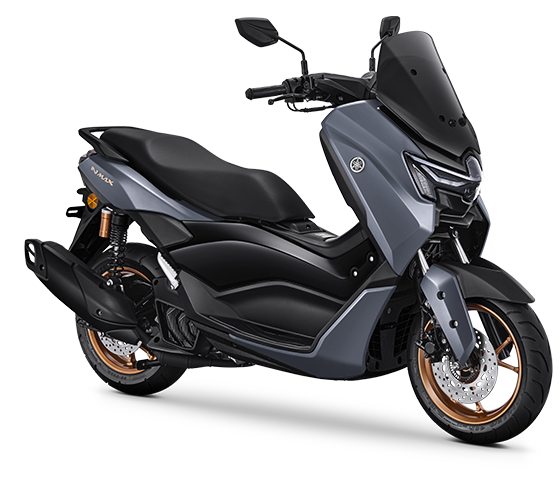

Yamaha Prihatin Motor
Yamaha Prihatin Motor
1996
Tahun Berdiri
300K+
Motor Ditangani
15+
Mekanik YTA

Showroom & Bengkel Resmi 3S
Jl. Raya Narogong No. 10 (Seberang CTC)
Sebagai Dealer resmi Yamaha dengan sertifikasi Star 3S, kami melayani penjualan unit baru, perawatan mekanikal presisi, dan ketersediaan suku cadang orisinal.
Pilihan lengkap seluruh lini resmi Yamaha: MAXi (NMAX Turbo, Aerox, XMAX), Classy (Grand Filano, Fazzio), Matic, Sport, hingga Off-Road dengan proses cepat dan promo menarik.
Servis berkala, tune up injeksi FI, overhaul mesin, kelistrikan, dan penggantian oli bergaransi 30 hari yang ditangani oleh mekanik tersertifikasi Yamaha Technical Academy.
Jaminan 100% keaslian Yamaha Genuine Parts (YGP), Yamalube, ban resmi, dan aki original demi keamanan serta ketahanan maksimal motor Anda.

155cc Y-ECVTSensasi akselerasi Turbo Y-Shift dengan kenyamanan berkendara kelas premium.
Detail & Varian 155cc VVA
155cc VVA
Super Sport Scooter berjiwa balap dengan desain aerodinamis tajam dan bertenaga.
Detail & Varian 125cc HYBRID
125cc HYBRID
Desain berkelas gaya Eropa, mesin Blue Core Hybrid, bagasi ekstra luas 27 liter.
Detail & Varian 250cc TCS
250cc TCS
Kenyamanan turing jarak jauh dengan navigasi Garmin terintegrasi dan TFT Display.
Detail & VarianKami menjaga kepercayaan Anda melalui transparansi biaya, mekanik bersertifikat resmi, dan fasilitas bengkel modern.
Seluruh teknisi kami terlatih langsung melalui standar resmi Yamaha Technical Academy (YTA).
Hanya menggunakan Yamaha Genuine Parts dan pelumas Yamalube bergaransi keaslian pabrik.
Setiap pengerjaan bengkel kami bergaransi penuh selama 30 hari tanpa biaya tambahan.
Dilengkapi Yamaha Diagnostic Tool generasi terkini untuk membaca data sensor ECU secara akurat.
Rincian biaya jasa dan penggantian suku cadang dikonfirmasi sebelum pengerjaan dimulai.
Alur kerja mekanik tersusun sistematis sehingga servis selesai tepat waktu.
Fasilitas ruang tunggu ber-AC, air mineral gratis, Wi-Fi, dan area nyaman saat menunggu servis.
Service Advisor dan tim sales siap memberikan solusi terbaik sesuai kebutuhan motor Anda.


Berdiri sejak 26 Mei 1996 di Cileungsi, Bogor, Yamaha Prihatin Motor telah dipercaya oleh ratusan ribu pelanggan sebagai mitra perawatan motor Yamaha.
Kami memegang berbagai sertifikat dan penghargaan resmi dari Yamaha Motor Indonesia — mulai dari Star Shop Certificate, President Award, Star 3S Dealer, hingga penghargaan kemitraan jangka panjang Yamaha.
Pengakuan konsistensi layanan dari Yamaha Motor Indonesia.
Pemindaian sistem injeksi & kelistrikan akurat dan cepat.
Testimoni asli dari para pelanggan yang mempercayakan perawatan motornya di Yamaha Prihatin Motor.
"Servisnya cepat dan hasilnya memuaskan. Motor saya jadi lebih halus dan tarikannya enteng. Mekaniknya juga ramah dan jelasin masalahnya dengan detail."
Ahmad Surya
Pemilik Yamaha NMAX"Sudah langganan dari dulu, servisnya selalu rapi dan harganya masuk akal. Pelayanannya juga konsisten bagus. Recommended Dealer Yamaha!"
Dina Rahayu
Pemilik Yamaha Aerox"Mesin motor saya overheat dan mati di jalan. Di-tow ke sini, ternyata cuma masalah kecil. Diperbaiki cepat, harganya juga wajar. Terima kasih!"
Budi Wicaksono
Pemilik Yamaha VixionKonsultasikan motor idaman Anda atau jadwalkan servis Anda tanpa antri bersama tim Yamaha Prihatin Motor.